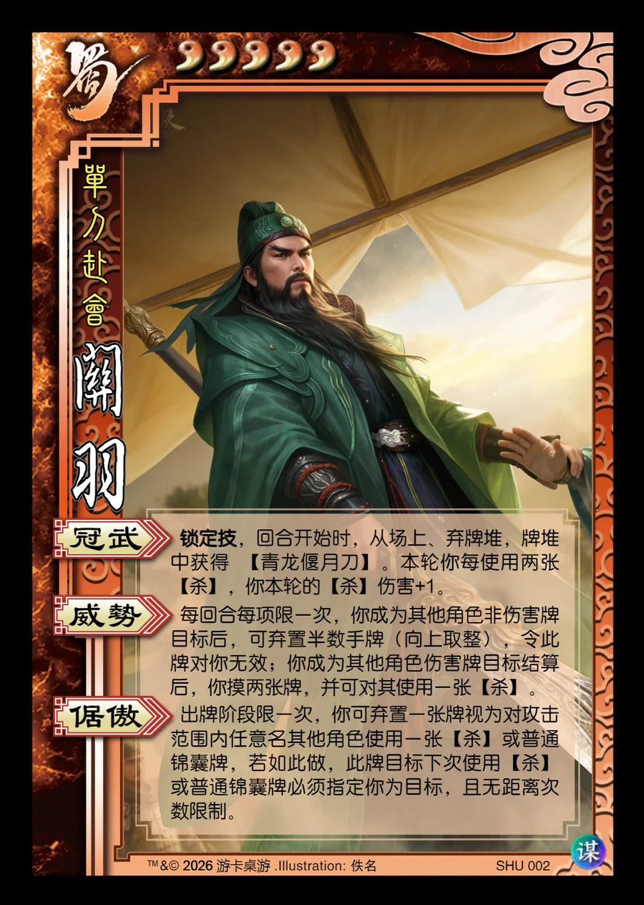

点击卡面查看大图
蜀
谋关羽
♥5单刀赴会
冠武锁定技
锁定技，回合开始时，从场上、弃牌堆，牌堆中获得 【青龙偃月刀】。本轮你每使用两张【杀】，你本轮的【杀】伤害+1。
威势
每回合每项限一次，你成为其他角色非伤害牌目标后，可弃置半数手牌（向上取整），令此牌对你无效；你成为其他角色伤害牌目标结算后，你摸两张牌，并可对其使用一张【杀】。
倨傲
出牌阶段限一次，你可弃置一张牌视为对攻击范围内任意名其他角色使用一张【杀】或普通锦囊牌，若如此做，此牌目标下次使用【杀】或普通锦囊牌必须指定你为目标，且无距离次数限制。